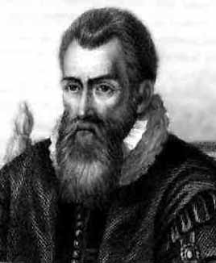

John Napier

1550 - 1617, Edinburgh, Schottland
John Napier (auch: Neper) wurde als Erfinder der Logarithmen bekannt.
Er veröffentlichte im Jahre 1614 seine Logarithmen unter dem Titel "Mirifici logarithmorum canonis descriptio".
Anders als die heutigen Logarithmen waren Napier's Logarithmen nicht zu einer bestimmten Basis,
obwohl man angenähert von einer Basis 1/e ausgehen kann.
Sie betreffen nämlich noch eine Konstante 107, die von der Konstruktion gemäss Neper stammt:
Napier dachte nicht an Logarithmen im algebraischen Sinn; in der Tat war Algebra zu dieser Zeit noch zu wenig entwickelt. Er überlegte in folgender dynamischer Weise:
Gegeben seien eine Strecke AB und eine Halbgerade (A' X) . Die Punkte C und C' starten nun in A bzw. A' und bewegen sich mit der gleichen Anfangsgeschwindigkeit nach rechts. C' hat konstante Geschwindigkeit; C hat Geschwindigkeit, die jederzeit gleich der Masszahl der Distanz von CB ist. Napier definierte y:= A'C' als den Logarithmus von x: = CB, d.h. y = Nap.log x und wählte die Länge von AB als 107.
Napier dachte nicht an Logarithmen im algebraischen Sinn; in der Tat war Algebra zu dieser Zeit noch zu wenig entwickelt. Er überlegte in folgender dynamischer Weise:
Gegeben seien eine Strecke AB und eine Halbgerade (A' X) . Die Punkte C und C' starten nun in A bzw. A' und bewegen sich mit der gleichen Anfangsgeschwindigkeit nach rechts. C' hat konstante Geschwindigkeit; C hat Geschwindigkeit, die jederzeit gleich der Masszahl der Distanz von CB ist. Napier definierte y:= A'C' als den Logarithmus von x: = CB, d.h. y = Nap.log x und wählte die Länge von AB als 107.
y = 107 · t = Nap.log(107 · e-t) (Zeit t)
bzw. y = -107 · ln (x / 107) = Nap.log x .
Napier machte dann aber noch eine Änderung in der Konstanten, so dass seine Definition für den Logarithmus lautete:
N = 107 · (1 - 10-7)L ⇔ L = Nap.log N
Die Tatsache, dass Nap.log 1 nicht gleich Null war (sondern Nap.log 107 = 0), war ein wesentliches Hindernis zu ihrer bequemen Behandlung. Eine Änderung mit log 1 = 0 wurde erst nach der Diskussion zwischen Napier und dem Londoner Professor Henry Briggs (1556 - 1630) vorgenommen.
Briggs führte dann die dekadischen Logarithmen (auch Briggsche oder Zehner-Logarithmen genannt) ein. Briggs veröffentlichte 1624 unter dem Titel "Arithmetica logarithmica" die 14-stelligen Logarithmen der Zahlen 1 bis 20000 und 90000 bis 100000. Die fehlenden Logarithmen berechneten später Ezechiel de Decker und Adrian Vlacq. Im Jahre 1627 erschien ihre erste vollständige Logarithmentafel.
Unabhängig davon entwickelte Jost Bürgi (1552 - 1632), ein Schweizer Uhrmacher, aus den Arbeiten zur Zinseszinsberechnung von Simon Stevin (1548 - 1620) natürliche Logarithmen, die als "Arithmetische und geometrische Prozesstabuln" 1620 in Prag veröffentlicht wurden.